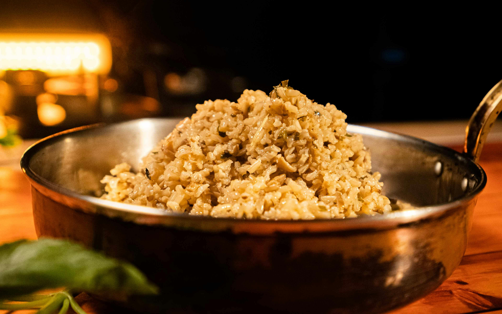

Classic Mushroom Risotto Recipe
A warm, creamy Italian classic
Ingredients
Equipment
Directions
Mushroom Risotto
Recipe by:
The Kitchn
—
www.thekitchn.com

Photo credit: Pexels.com, Creative Commons License
Rate This Recipe
How difficult is this recipe?
Easy
Intermediate
Hard
Conversion
=
Ingredients
1 1/2 cups Arborio rice
4 cups chicken or vegetable broth
1 cup sliced mushrooms
1 medium onion, finely chopped
3 cloves garlic, minced
1/2 cup dry white wine
1/2 cup grated Parmesan cheese
2 tablespoons butter
2 tablespoons olive oil
Salt and pepper to taste
Fresh parsley for garnish
Equipment
Small saucepan
Tablespoon
Fork
Knife
Platter
Directions
Warm the broth in a small saucepan over low heat and keep it simmering.
Heat olive oil in a large skillet over medium heat. Add onion and cook until soft, about 3 minutes.
Add garlic and mushrooms, cook for another 3-4 minutes until mushrooms are tender.
Add Arborio rice and stir for 1-2 minutes until lightly toasted.
Pour in the white wine and stir until fully absorbed.
Add warm broth one ladle at a time, stirring constantly.
Continue for about 18-20 minutes until rice is creamy and cooked through.
Remove from heat. Stir in butter and Parmesan cheese.
Season with salt and pepper. Garnish with parsley and serve immediately.